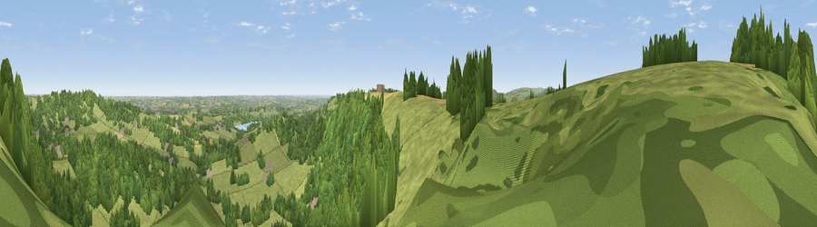

Viewpoint near Milltown
#16834 in England · top 15% of its area beats it · near MilltownThe view, rendered

A 360° render of this exact spot computed from the terrain model, tree cover and land cover — summer colours, afternoon light, calibrated against photographs of famous viewpoints. Real trees, hedges and buildings will differ in detail.
The panorama
Grey silhouette: terrain skyline in each direction (720 bearings, Earth curvature and refraction included). Dashed green: skyline with trees (+15 m) and buildings (+8 m) as obstacles. Blue strip: how far the ground is visible on each bearing.
Where the view opens
Wedge length = distance to the farthest visible ground on that bearing (vegetation-aware). Rings at 10, 25 and 50 km.
What fills the view
61% woodland · 36% grassland · 1% cropland ·
Angular shares of the visible panorama (visual magnitude), not map area. Landscape diversity 0.34 (0–1 Shannon).
Key numbers
More beautiful places nearby
The staircase of upgrades: each row has a higher view potential than everything closer. Driving times are estimates from straight-line distance, calibrated against real road routing — check an actual route before setting out.
| Place | Direction | Drive | Score |
|---|---|---|---|
| Viewpoint near Milltown | N · 0 km | ~1 min | 61.5 |
| Viewpoint near Ashover Hay | SSE · 2 km | ~6 min | 62.1 |
| Viewpoint near Alton | NE · 2 km | ~6 min | 67.7 |
| Viewpoint near Brackenfield | SSE · 3 km | ~7 min | 68.3 |
| Crich Stand | S · 6 km | ~13 min | 73.0 |
| Alport Height | SSW · 11 km | ~21 min | 73.9 |
| Tissington Hill | WSW · 21 km | ~35 min | 75.5 |
| Viewpoint near Mow Cop | W · 48 km | ~69 min | 78.9 |
53.15109, -1.48811 · source: osm viewpoint · position refined by local search. Computed location — check access rights before visiting.